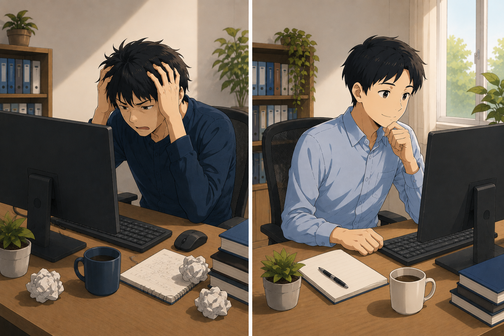
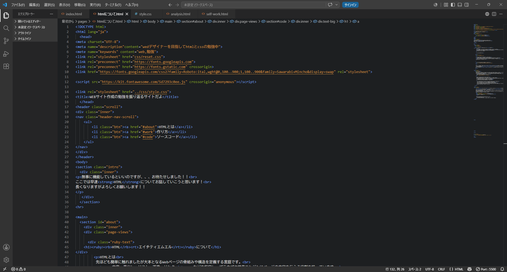

コードの読み解きやすさ
コードの読みやすさはとても重要です。
コードのミスや書き忘れに気づかないといけません。
メモ帳とVSCではここも違いが出ます。
それぞれ画像で比較して見ましょう

コードの読み解きやすさ
コードの読みやすさはとても重要です。
コードのミスや書き忘れに気づかないといけません。
メモ帳とVSCではここも違いが出ます。
それぞれ画像で比較して見ましょう。
まずはメモ帳です。

次にVCSです。

メモ帳はテキストがすべて黒で統一されているのに対し、
VSCには要素やタグ等が青・緑・
オレンジ・白で色分けされてます。
これは僕が色分けしたわけではありません。
VSCが分けてくれています。
タグやテキスト、属性と呼ばれる要素を入力した後自動で振り分けてくれます。
こうして比較するとやっぱりメモ帳は区分けされてないので分かり辛いですね。💦
こうしてVSCで可視化すると、どこにタグや要素を置いているか分かりやすいですが…メモ帳は難しいですね。
編集した本人はわかるかもしれませんが、もしもこれがお仕事ならどうでしょうか？
コードの編集や修正は必ず作成者が行うとは限りません。作成を依頼して管理は別の方にお願いすることだってあります。
それに不具合があった時、メモ帳では探し難いです。
今回メモ帳に書いてある項目はかなり少ないです。それでもこの量です。
これを見てどこが間違っていているのか探すのは一苦労します。
この辺は、専用エディターの強みですね。
余談ですが割り振られているカラーは編集で変えることもできます。
デフォルトでカラーが指定されているものを私は使用しています。
メモ帳はテキストがすべて黒で統一されて
いるのに対し、
VSCには要素やタグ等が
青・緑・
オレンジ・白で色分けされてます。
これは僕が色分けしたわけではありません。
VSCが分けてくれています。
タグやテキスト、属性と呼ばれる要素を
入力した後自動で振り分けてくれます。
こうして比較するとやっぱりメモ帳は区分けされてないので分かり辛いですね。💦
こうしてVSCで可視化すると、どこにタグや要素を置いているか分かりやすいですが…
メモ帳は難しいですね。
編集した本人はわかるかもしれませんが、
もしもこれがお仕事ならどうでしょうか？
コードの編集や修正は必ず作成者が行うとは限りません。
作成を依頼して管理は別の方にお願いすることだってあります。
それに不具合があった時、メモ帳では探し難いです。
今回メモ帳に書いてある項目はかなり少ないです。
それでもこの量です。
これを見てどこが間違っていているのか探すのは一苦労します。
この辺は、専用エディターの強みですね。
余談ですが割り振られているカラーは編集で変えることもできます。
デフォルトでカラーが指定されているものを私は使用しています。